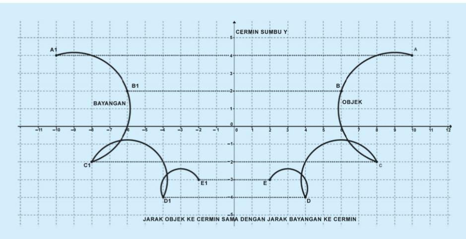
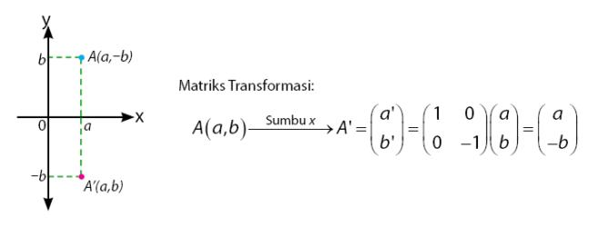
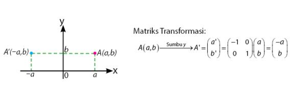
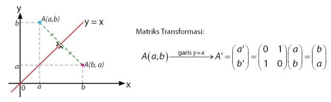
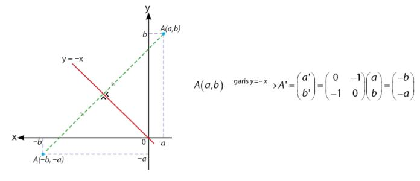
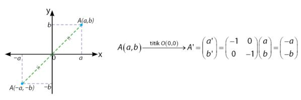
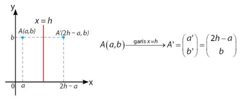
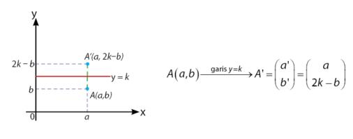

Refleksi
Konsep Refleksi
Coba kamu amati dirimu pada saat bercermin (pada cermin datar). Tentu saja kamu melihat bayangan dirimu di cermin. Kalau kamu amati, jarak dirimu ke cermin akan sama dengan jarak bayanganmu ke cermin. Perhatikan ilustrasi di bawah ini :
Pencerminan dapat dilakukan pada sumbu yang berbeda-beda, diantaranya meliputi :
1. Pencerminan terhadap sumbu X
2. Pencerminan terhadap sumbu Y
3. Pencerminan terhadap garis y=x
4. Pencerminan terhadap garis y=-x
5. Pencerminan terhadap titik asal O(0,0)
6. Pencerminan terhadap garis x=h
7. Pencerminan terhadap garis y=k
